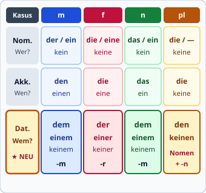

Dativ und Artikel
Mit einem KI-Tutor lernen
Ein KI-Tutor erklärt dir diese Seite und hilft dir bei den Aufgaben. Wähl deinen Assistenten:
Mit Claude öffnen Mit ChatGPT öffnen Mit Mistral Vibe öffnen
Du nutzt dein eigenes Konto beim Anbieter. Der Assistent ist kein Angebot von lernapps.net: lernapps liefert nur Inhalte und Aufgaben. Die Wahl gilt für alle Seiten, nur auf diesem Gerät.
Wer bekommt das Geschenk? — Zeile 3 im Dativ
Peter verteilt seine Geschenke an Familie Weber. Die Person, die etwas bekommt (das indirekte Objekt — Wem?), steht im Dativ. Im Dativ ändern sich alle vier Spalten: Maskulin und Neutrum bekommen -m (dem/einem), Feminin wird zu -r (der/einer) und Plural wird zu den + -n am Nomen!

© CC-BY-SA-4.0Zeile 3 (Dativ): Merkwort M-R-M-N (dem, der, dem, den + -n am Pluralnomen).
Das Extra-n im Dativ Plural
Im Dativ Plural bekommt das Nomen ein -n, wenn der Plural nicht schon auf -n oder -s endet: die Kinder → den Kindern, die Freunde → den Freunden, aber die Fotos → den Fotos (endet auf -s).
Übung
Aufgabe
Wähle den richtigen Dativartikel für die Empfänger.
- Peter gives the brother (der Bruder) a book. → Peter schenkt … Bruder ein Buch.
- Peter gives the sister (die Schwester) a ball. → Peter schenkt … Schwester einen Ball.
- Peter gives the child (das Kind) a game. → Peter schenkt … Kind ein Spiel.
- Peter gives a friend (ein Freund) a card. → Peter schenkt … Freund eine Karte.
Lösung
- Peter schenkt dem Bruder ein Buch.
- Peter schenkt der Schwester einen Ball.
- Peter schenkt dem Kind ein Spiel.
- Peter schenkt einem Freund eine Karte.
Dativ-Artikel: maskulin dem/einem, feminin der/einer, neutrum dem/einem, Plural den.
Aufgabe
Ergänze Artikel und Pluralnomen im Dativ (denke an das -n!).
- Peter writes cards to the friends (die Freunde). → Peter schreibt … Karten.
- Frau Weber reads a story to the children (die Kinder). → Frau Weber liest … eine Geschichte vor.
- He gives a girl (eine Freundin) flowers. → Er schenkt … Blumen.
Lösung
- Peter schreibt den Freunden Karten.
- Frau Weber liest den Kindern eine Geschichte vor.
- Er schenkt einer Freundin Blumen.
Im Dativ Plural steht den und das Nomen bekommt ein -n, falls es nicht schon auf -n oder -s endet.
Fehler gefunden oder eine Idee für diese App?